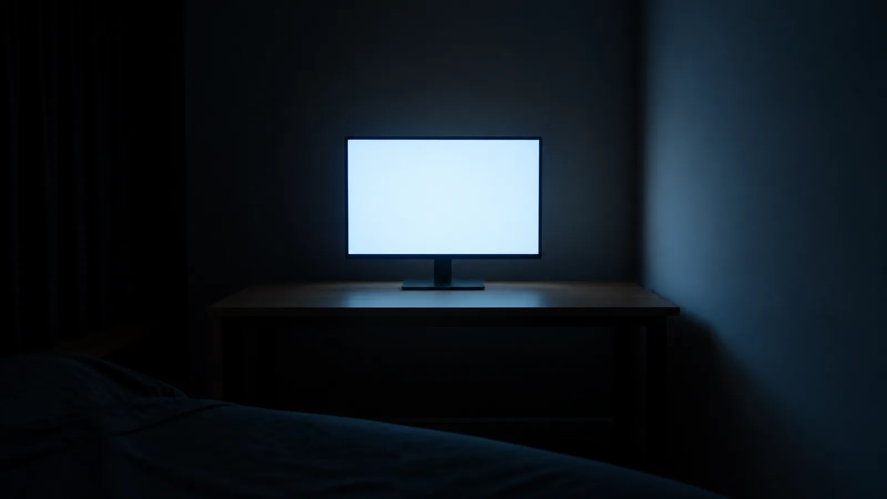
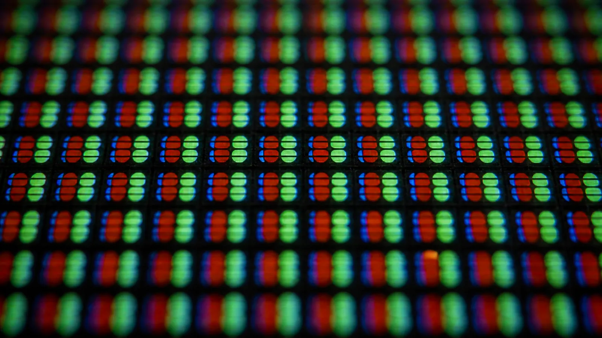
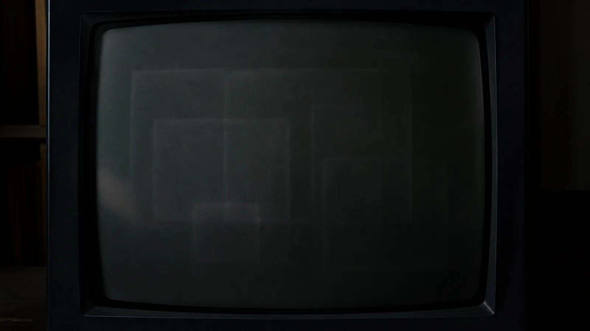
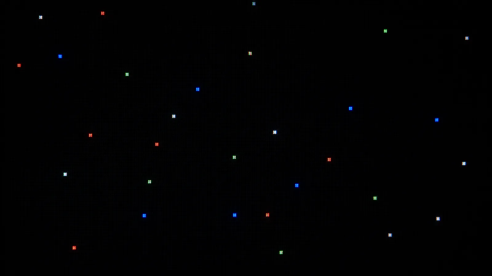
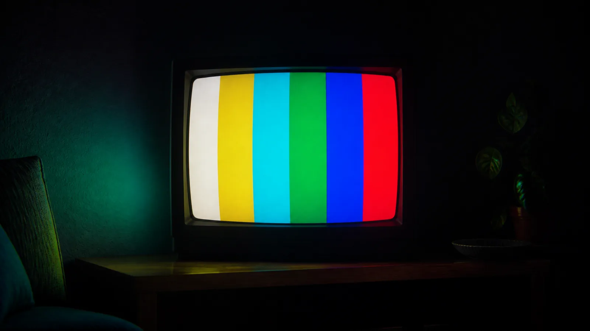
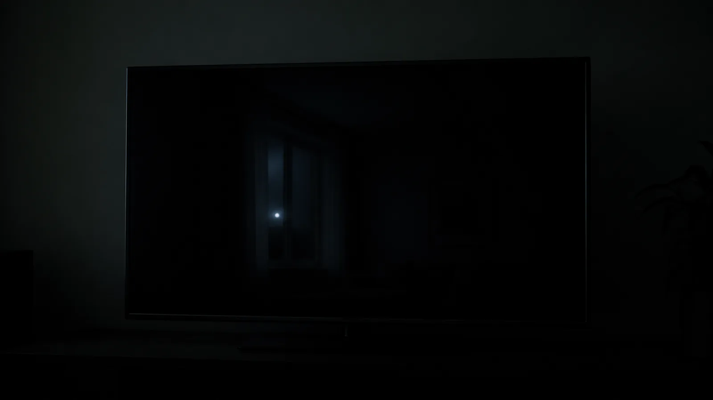
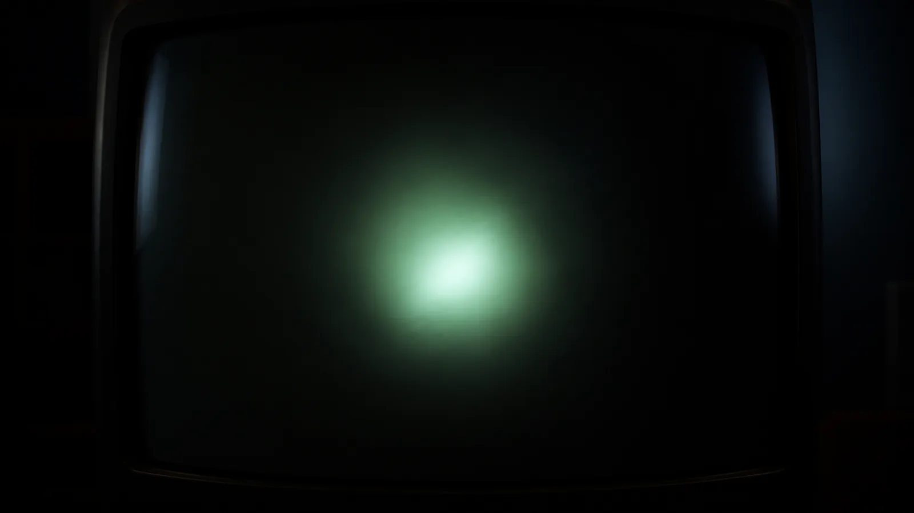
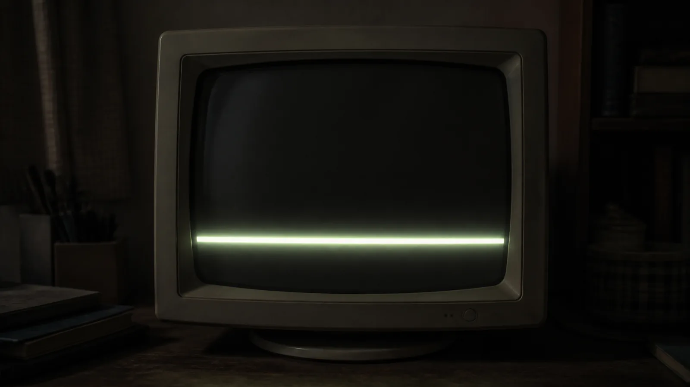

갤러리 오프라인 · 개인전 · 2026. 9. 12 – 11. 2
殘光잔광, 꺼진 화면들을 위한 여덟 개의 방
한새벽 사진전 · 온라인 뷰잉룸
"화면은 꺼진 뒤에도 0.3초 동안 빛난다. 이 전시의 여덟 방은 전부 그 0.3초를 늘여 놓은 방들이다."
한새벽은 켜진 화면을 찍지 않는다. 그의 카메라는 언제나 꺼지는 순간, 꺼진 직후, 꺼진 지 오래된 화면들을 향한다. 잠들지 못한 방의 모니터, 눌어붙은 창의 유령, 죽은 픽셀, 방송이 끝난 채널. 전부 화면이 무언가를 그만두는 순간의 빛이다.
관람자에게 한 가지를 부탁한다. 이 뷰잉룸에서 작품 위에는 아무것도 올리지 않았다. 설명이 필요한 자리에는 설명의 벽을 따로 세웠고, 만질 수 있는 것은 전부 작품 옆에 두었다. 작품은 작품의 벽에, 말은 말의 벽에, 도구는 도구의 자리에. 그것이 이 갤러리의 유일한 규칙이다.
여덟 개의 방








칸을 누르면 그 방으로 이동한다. 방마다 감상 방식이 다르다.
새벽 네 시의 모니터
2024 · 디지털 C-프린트
잠이 오지 않는 방에서 모니터만 깨어 있다. 화면 한가운데의 흐린 백열은 아무 창도 띄우지 않은 바탕화면의 빛이다. 연작의 첫 작품.
주사선 연습 I
2024 · 디지털 C-프린트
브라운관의 주사선을 접사로 받아 적었다. 작가는 이 작품을 "필사"라고 부른다. 기계의 획순을 따라 쓴 것. 마우스를 올리면 돋보기가 획을 따라온다.
번인 Burn-in
2025 · 디지털 C-프린트
같은 창을 너무 오래 띄워두면 화면에 유령이 눌어붙는다. 분할선을 끌어 화면을 밝혀 보라. 밝힌 쪽에도 유령은 그대로 있다. 지워지지 않아서 잔상이다.
데드픽셀 성좌
2025 · 디지털 C-프린트
죽은 픽셀은 수리 대상이지만, 작가는 그것들을 이어 별자리를 만들었다. 고장의 지도가 그대로 밤하늘이 된다.
마지막 프레임
2025 · 디지털 C-프린트
방송이 끝난 채널의 컬러바. 아무도 보지 않는 시간에만 송출되던, 방송국의 잠옷 같은 화면.
전원이 나간 방
2026 · 디지털 C-프린트
거의 완전한 검정. 그러나 완전하지는 않다. 이 작품 앞에서는 오래 서 있을수록 더 많이 보인다.
부팅의 기억
2026 · 디지털 C-프린트
어릴 적 컴퓨터가 켜지는 데는 2분이 걸렸고, 그 2분의 로딩 바는 하루 중 가장 긴 시간이었다.
殘光 잔광
2026 · 디지털 C-프린트 · 가변 크기
"내가 찍은 것 중 가장 느린 사진." (작가 노트, 가상) 전원이 끊긴 직후의 0.3초. 형광물질이 빛을 놓아주지 않으려는 시간.
꺼진 화면만 찍은 지 1년. 오늘 처음으로 "연작"이라는 말을 썼다. 아무도 웃지 않았다.
《번인》 작업 중. 잔상을 찍는 건데 자꾸 닦게 된다. 지워지지 않아서 잔상인데.
갤러리에서 연락. "켜진 화면 사진은 없나요?" 없다고 답장을 쓰다가 지웠다.
여덟 번째 방을 닫았다. 이제 화면을 꺼도 된다.
발췌 · 전문 비공개 (이 일지 역시 픽션이다)
한새벽은.
이것이 첫 전시다.
1994년 대전 출생. 컴퓨터공학을 중퇴하고 웹 퍼블리셔로 6년을 일했다. 2023년부터 꺼진 화면 연작. 개인전 《잔광》(2026, 갤러리 오프라인)이 첫 전시다.
주소가 없다. 갤러리 오프라인은 주소가 없는 갤러리다. 이 페이지가 전시장이다.
작품 위에 글자가 없다. 설명은 설명의 벽에, 도구는 도구의 자리에 있다.
방명록이 없다. 문의도 없다. 조용히 보고 조용히 나가면 된다.